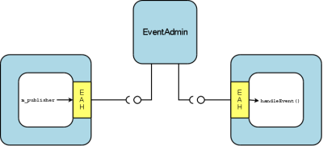

Event Admin HandlersThe goal of the Event Admin Handlers is to allow event communications between iPOJO component instances. The implementation of these handlers relies on an event admin services. It enables the iPOJO component to listen to a list of topics and to receive all related event. It also allows components to send events in an easy way. Hereafter is presented a small example of the metadata.xml file : <ipojo
xmlns:ev="org.apache.felix.ipojo.handlers.event.EventAdminHandler">
<component className="...MyComponent">
<ev:subscriber
name="mySubscriber"
callback="receive"
topics="foo"/>
<ev:publisher
name="myPublisher"
field="m_publisher"
topics="bar,nuts"/>
</component>
<instance component="...MyComponent"/>
</ipojo>
You need to specify the namespace of the Handler. You can find here one event subscriber (named mySubscriber) and one event publisher (named myPublisher). In these handler configurations, the name parameter is mandatory. The topics parameter is optional as it can be specified in the instance configuration. The callback parameter of the mySubscriber element is mandatory and indicates the method that handles received events. In this case, this method must have a single argument of type org.osgi.service.event.Event. The field parameter of the myPublisher element indicates the field (of type org.apache.felix.ipojo.handlers.event.publisher.Publisher) that is used by the POJO to send events on the specified topics. All type compliance will be checked by the handler at component instantiation time. Here is an example of the component implementation, compatible with the given description : import org.apache.felix.ipojo.handlers.event.publisher.Publisher; import org.osgi.service.event.Event; public class MyComponent ... { private Publisher m_publisher; public void receive(Event e) { // Event received // Do something with the event} public void doSomething() { Dictionary e = new Properties(); //... // Fill out the event // Send event m_publisher.send(e); } } DownloadThe event admin handlers (to send and receive events) are available in the Felix trunk in the iPOJO project. See the Download page to download and compile these sources. How does it work?The handler will parse the description provided in the metadata, and register for you the EventHandler in the OSGi Registry. On one hand, your POJO will receive each event through the handler. With this handler you can specify different callback methods for different topics. On the other side, the handler instantiates and injects configured Publisher references in your POJO, so you can send events transparently through these publishers. EventHandler SpecificationHere you can find all configuration options of the EventAdmin handler. As seen before, the handler contains two components : the event subscriber and the event publisher. These components can be configured, using several attributes, as described below. Some of these attributes can be (re)defined in the instance configuration. Handler namespace : org.apache.felix.ipojo.handlers.event.EventAdminHandler Event subscriber attributes
* These attributes can be (re)defined in the instance configuration. Event publisher attributes
* These attributes can be (re)defined in the instance configuration. Instance configurationSome of the described attributes can be (re)defined in the instance configuration section of your metadata file. Its permits to configure event management instance by instance. The following properties are used by the handler :
Publisher interfaceThe Publisher interface is the link between the component code and the handler. It permits to publish events on the topics specified in the component's description (or instance configuration). The implemented methods are :
Handler ArchitectureHere is shown the global architecture of the EventHandler : the interactions between the user components (i.e., POJO), the handler and the OSGi runtime environment.  EventHandler FeaturesIn this section, you will find some examples of the handler's features. Instance customizationAs described in the 'Instance configuration' section, you can (re)define some of the subscribers or publishers attributes. You can notice that required attributes that are not defined in the component description must be defined in the instance configuration section. Hereafter is an example of an instance configuration of this handler : <ipojo
xmlns:ev="org.apache.felix.ipojo.handlers.event.EventAdminHandler">
<component className="...MyComponent">
<ev:subscriber
name="mySubscriber"
callback="handleEvent"/>
<ev:publisher
name="myPublisher"
field="m_publisher"/>
</component>
<instance component="...MyComponent">
<property name="event.topics">
<property name="mySubscriber" value="foo"/>
<property name="myPublisher" value="bar,nuts"/>
</property>
<property name="event.filter">
<property name="mySubscriber"
value="|((arg=Minibar)(arg=Coconuts))"/>
</property>
</instance>
</ipojo>
Data eventsOne of the most important features of the EventHandler is the capability of sending and receiving data events. You may know that the OSGi EventAdmin Service allows bundles to send custom objects in events, inserting them in the event's dictionary. The EventHandler hides the dictionary manipulation and allows iPOJO components to receive custom objects at any time. First, you have define the data-key attribute in the publisher configuration. Sent objects will be contained in the event dictionary and are accessible with the "user.data" key. <ipojo
xmlns:ev="org.apache.felix.ipojo.handlers.event.EventAdminHandler">
<component className="...DataPublisher">
<ev:publisher
name="myPublisher"
field="m_publisher"
topics="myTopic"
data-key="my.data"/>
</component>
<instance component="...DataPublisher"/>
</ipojo>
Then you can use the sendData method of your configured publisher. import org.apache.felix.ipojo.handlers.event.publisher.Publisher; //... public class DataPublisher ... { private Publisher m_publisher; public void doSomething() { // MyFavoriteType extends MyFavoriteInterface MyFavoriteType data = new MyFavoriteType(...); //... // Send a data event m_publisher.sendData(data); } } The second step is to configure an event subscriber to receive such events. The data-key attribute's value of the subscriber must be the same than the publisher's one. The data-typedescribe the type of received data events, and thus, must be compatible with the sent object's type (i.e., super-class or inherited interface). Then you can finally receive the sent object in the callback method. The parameter type of the callback must be the same than the data-type attribute value. <ipojo xmlns:ev="org.apache.felix.ipojo.handlers.event.EventAdminHandler"> <component className="...DataEventSubscriber"> <ev:subscriber name="mySubscriber" callback="handleData" topics="myTopic" data-key="my.data" data-type="my.package.MyFavoriteInterface"/> </component> <instance component="...DataEventSubscriber"/> </ipojo> import my.package.MyFavoriteInterface; //... public class DataEventSubscriber ... { public void handleData(MyFavoriteInterface o) { // Object received //... } } Note on synchronous event sendingBy default, events are sent using asynchronous sending (a.k.a.post in OSGi EventAdmin). You can use synchronous sending by defining the synchronous attribute of your publisher to true. The behaviour of synchronous event sending is particular when you specify several topics in the publisher description. The event is synchronously sent to each topic, one by one. So when you return from this function, you can be sure that the event has been delivered to each topic. Publisher instance informationAll events sent by a publisher contains the name of the component instance that sent them. Its enables to filter received events depending the sender instance. The instance name is accessible in the event dictionary by the key publisher.instance.name. Despite it goes against MOM principles, this property is useful to trace events and especially event sources. |
OverviewGetting StartedUser Guide
ToolsDeveloper GuideMisc & Contact
|